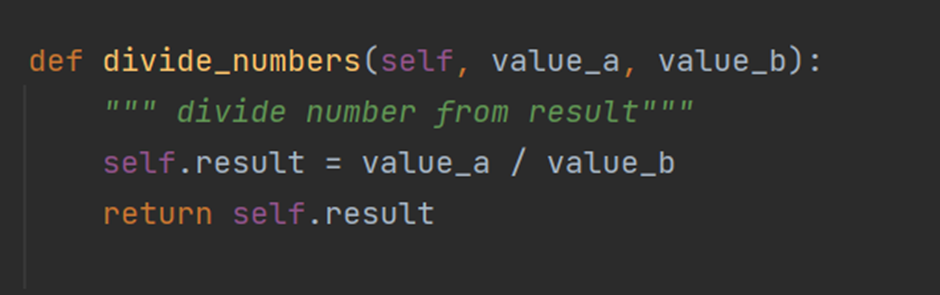
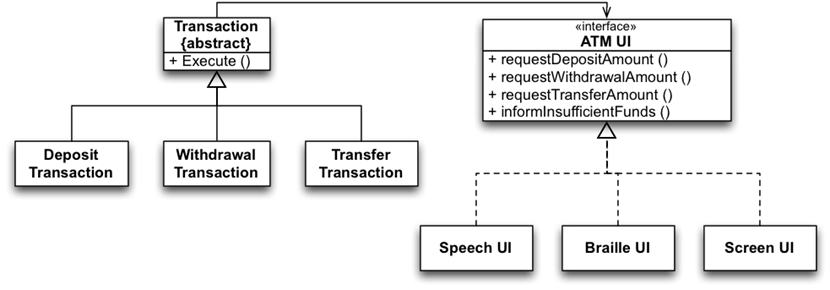
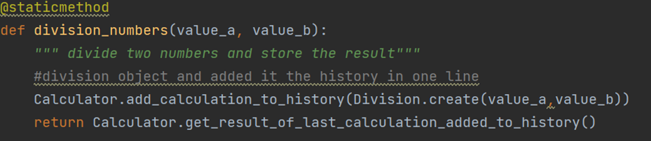

SOLID Object Oriented Design
SOLID is a mnemonic abbreviation for a set of design principles created for software development in object-oriented languages. The principles in SOLID are intended to foster simpler, more robust and updatable code from software developers. Each letter in SOLID corresponds to a principle for development. When implemented properly it makes your code more extendable, logical and easier to read. To understand SOLID principles, you have to know the use of the interface clearly. I’m going to try to explain SOLID Principles in Python in simplest way so that it’s easy for beginners to understand. It would be very easy to just take the examples provided and apply them to Python.
1. Single Responsibility Principle
2. Open/Closed Principle
3. Liskov Substitution Principle
4. Interface Segregation Principle
5. Dependency Inversion Principle
Let’s go through each principle one by one:
1. Single Responsibility Principle
This is probably the most intuitive principle, also true for software components or microservices. Having “only one reason to change” could be restated as having “only one responsibility”. This makes code more robust and flexible, easier to understand for someone else, and you will avoid some unexpected side-effects when changing existing code. You will also need to make fewer changes: the more independent reasons a class has to change, the more often it has to change. If you have lots of classes depending on each other, the number of changes you need to make might grow exponentially. The more complicated your classes are, the more difficult it is to change them without unexpected consequences.
2. Open-Closed Principle
This means that I should be able to add new functionality without changing my existing code structure, but by adding new code instead. The goal is to change existing, tested code as little as possible to prevent bugs and having to test everything all over again. If this principle is not followed, the result could be a long list of changes in depending classes, regression on existing features, and unnecessary hours of testing.
This is demonstrated by the following example:

In the above example initially the was made up to perform addition and subtraction operations. Now lets say we would want to add some more mathematical operation in this class or file but also we need to make sure we are not making any changes in the code and if there adding new it should not impact existing code.

We created a separate divide_numbers() now this function will be responsible to perform division operation. Well as the principle states we have extended the code but the code is not modifying or simply we can say its not tightly couple to other.
3. Liskov Substituion Principle
This principle is by Barbara Liskov, who formulated her principle very formally:
“Let φ(x) be a property provable about objects x of type T. Then φ(y) should be true for objects y of type S where S is a subtype of T.”
This means that if we have a base class T and subclass S, you should be able to substitute the main class T with the subclass S without breaking the code. The interface of a subclass should be the same as the interface of the base class, and the subclass should behave in the same way as the base class.
If you have a method in T that is being overridden in S, then both methods should take the same inputs, and return the same type of output. The subclass can return only a subset of the return values of the base class, but it should accept all the inputs the base class does.

In above diagram, Protocol LoginUseCase define method to be implemented by class. Client who consumes use case should be able to work with both DefaultLoginUseCase , MockLoginUseCase without any change in code.
4. Interface Segregation Principle
“Clients should not be forced to depend upon interfaces that they do not use.”
If you have a base class with many methods, possibly not all of your subclasses are going to need them, maybe just a few. But due to inheritance, you will be able to call these methods on all the subclasses, even on those that don’t need it. This means a lot of interfaces that are unused, unneeded and will result in bugs when they get accidentally called.
This principle is meant to prevent this from happening. We should make interfaces as small as possible, so that we don’t need to implement functions we don’t need. Instead of one big base class, we should split them into multiple ones. They should only have methods that make sense for each, and then have our subclasses inherit from them.
In the next example, we wil be using abstract methods. Abstract methods create an interface in a base class that have no implementation, but are forced to be implemented in every subclass that inherits from the base class. Abstract methods are essentially enforcing an interface.

5. Dependency Inversion Principle
The last principle says,
High-level modules should not depend on low-level modules. Both should depend on abstractions (e.g. interfaces).
Abstractions should not depend on details. Details (concrete implementations) should depend on abstractions.
If your code has well-defined abstract interfaces, changing the internal implementation of one class shouldn’t break your code. A class it interacts with should not have knowledge of the inner workings of the other class, and should be unaffected as long as the interfaces are the same.
An example would be changing the type of database you use (SQL or NoSQL) or changing the data structure you store your data in (dictionary or list).


In this example the method made up for returning the last calculation added up to the history. But instead of taking values its taking the values are being returned using interface methods this is what the principle Dependency inversion principle.
Conclusion
The SOLID design principles are meant to be a guideline to write maintainable, expandable and easy to understand code. It is worth keeping them in mind next time you think of a design, to write SOLID code. Just go through the letters in your mind, recalling what each of them meant:
2. Open/Closed Principle
3. Liskov Substitution Principle
4. Interface Segregation Principle
5. Dependency Inversion Principle
Now go and make the world a better place codebase by codebase!